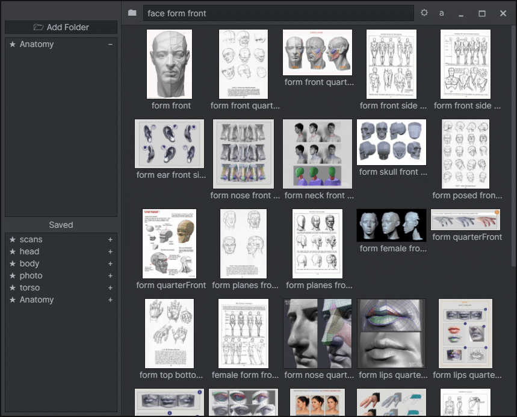
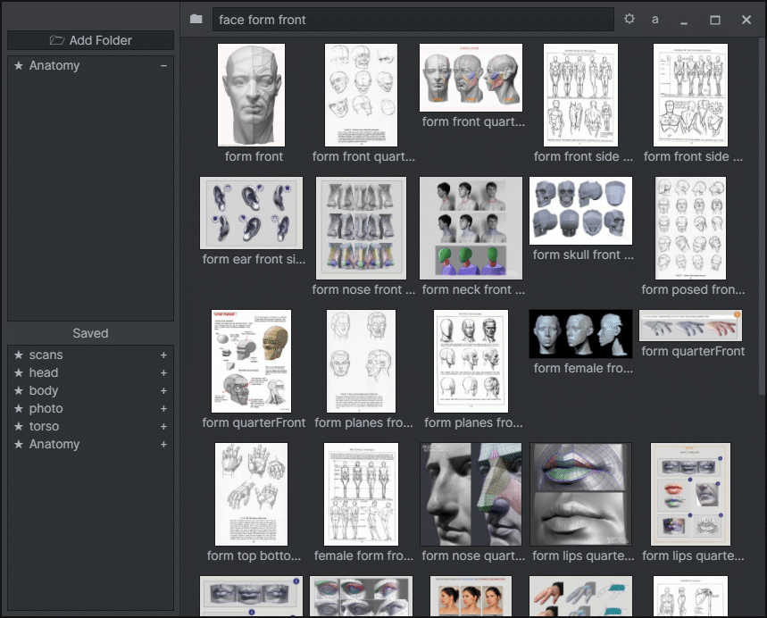

Ubi Image
A simple app for quick image searching within directories. Made to quickly sort through folders image references. Built with Electron.

A simple app for quick image searching within directories. Made to quickly sort through folders image references. Built with Electron.
